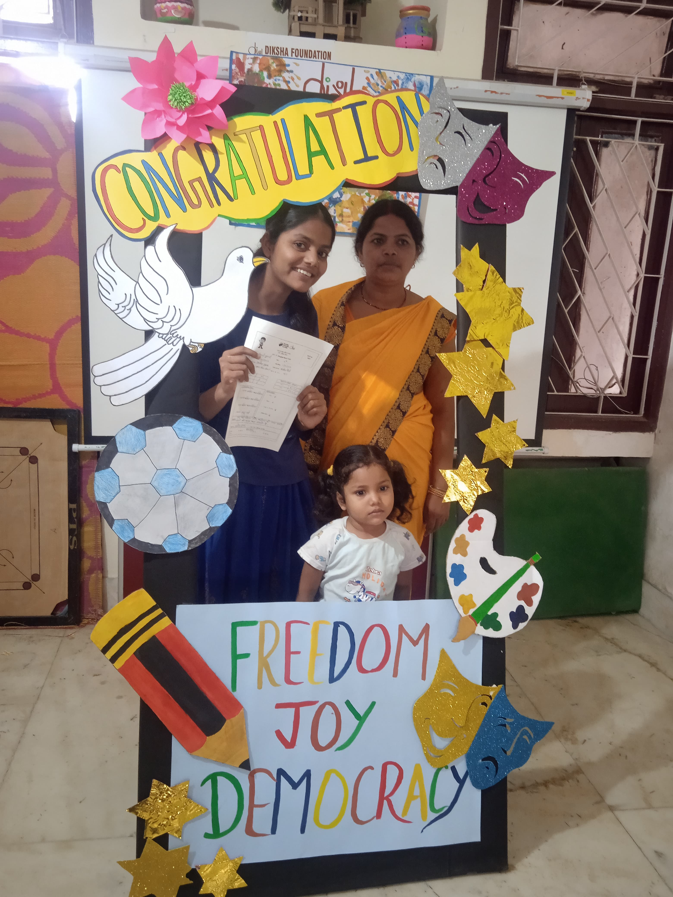
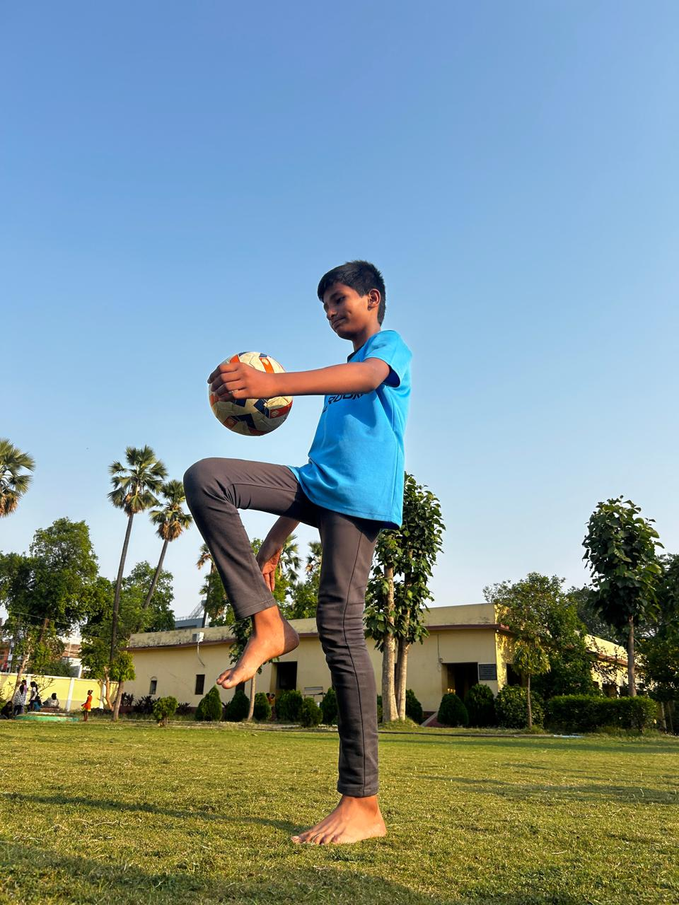
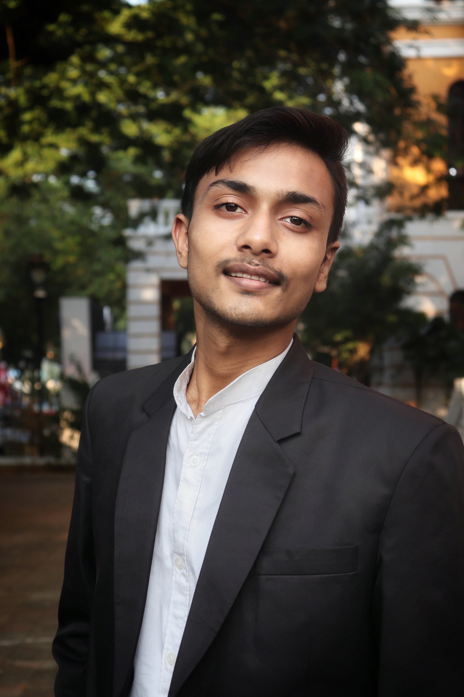
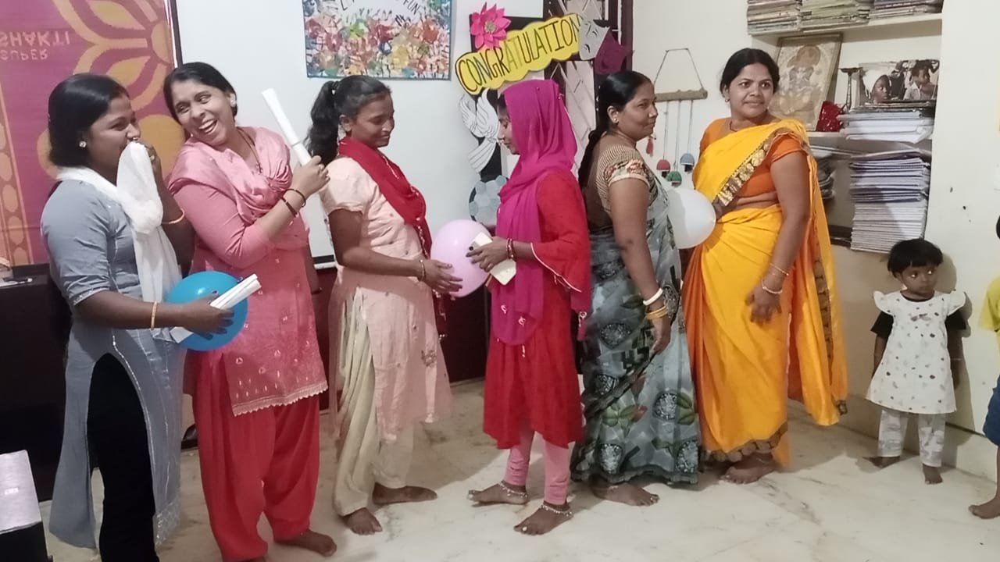

Hindi, English and mathematics
Educators work from what each child can do, then plan the next step. Homework support is part of the work, but not the whole of it.
Rukanpura · Patna
Children come here after school. They work on Hindi, English and mathematics; use Khan Academy; make things; rehearse; play football; run Bal Sansad; and meet educators who know them over time.
Diksha began work in Rukanpura in 2010. The first KHEL centre grew from that work and remains the programme’s longest-running learning space.
See what happens here
What children do here
The timetable makes room for practice, conversation and trying again. The mix changes by age and by what children need at the time.
Educators work from what each child can do, then plan the next step. Homework support is part of the work, but not the whole of it.
Children practise at their own pace and learn to use digital tools for study, research and making.
A play, a Mithila painting or a working model gives children another way to understand an idea and show what they can do.
Practice builds stamina, teamwork and the confidence to take one’s place on a field.
Children take roles, raise concerns and help make decisions about the centre. Regular reflection gives them time to speak and listen.

Work with nearby schools
KHEL educators also work with children and teachers in four government schools near the Patna centre. This keeps the work connected to children’s school day and to the neighbourhoods where they live.
How the centre developed
KHEL Patna did not arrive as a finished model. Educators added and changed parts of the programme as they learned from children, families and schools.
2010–2015
Diksha began in Rukanpura with academic support. Computer learning, Bal Sansad and work with younger children became part of the centre.
2016–2019
Peer educators, youth clubs, Be a Jagrik and IGNITE gave adolescents room to lead, act in public and stay involved beyond schoolwork.
2020 onwards
Digital learning, social-emotional learning, arts, sport, STEAM and school outreach now sit alongside the centre’s academic work.
Asha Purdue supported KHEL for about eleven years, helping the centre establish its computer work and reach more children.

Alumni stay involved
Former students have returned as teachers and mentors, entered higher education and public service, and helped younger children at the centre.
Maya joined KHEL Patna in 2012. She later returned as a KHEL teacher and continued her studies in sociology. Her route—from learner to educator—is one of several ways alumni remain part of Diksha.
Today, around 30% of Diksha’s team are former programme participants.
Families
Parent meetings are not only for attendance or results. Children present their work; educators explain what they are observing; families share what they see at home. That conversation helps the team plan what comes next.

Support KHEL Patna
General donations keep daily sessions running. Regular support pays for educators, learning materials, rent and upkeep, digital access, and the time needed to work consistently with children and families.